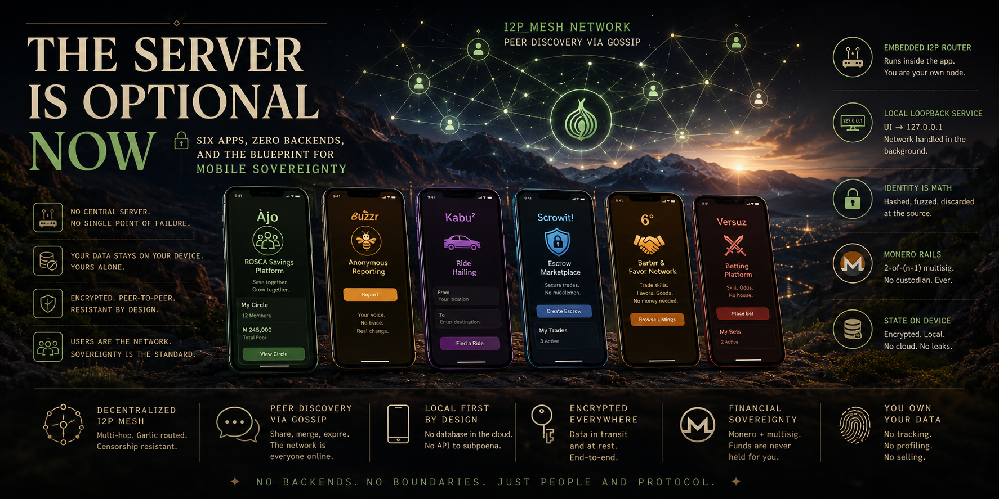

For fifteen years, "mobile app" has quietly meant "thin client for someone else's server." This is the engineering blueprint for the alternative — six shipped Android apps, spanning savings circles, anonymous reporting, ride-hailing, escrow, barter, and betting, all built on the exact same skeleton: an embedded I2P router, on-device state, gossip-based peer discovery, and — where money moves — Monero multisig instead of a custodian. No backend to breach, subpoena, or sunset.
Every mobile app you've used this week almost certainly talks to a server you'll never see. That server holds your data, enforces the business logic, and — whether or not the company intends to misuse it — represents a single point where your information can be breached, subpoenaed, sold, or simply switched off when the product gets shut down. This has been true for so long that "app" and "client of a cloud service" have become almost synonymous.
Six apps built over the past several months set out to test whether that's actually necessary. Not as a thought experiment — as shipped, working Android software: Àjọ, a Monero-based rotating savings circle; Buzzr, an anonymous witness-reporting tool; Kabu², a peer-to-peer ride-hailing and courier app; Scrowit!, a Monero escrow marketplace; 6°, a barter and favor-trading network; and Versuz, a decentralized betting platform. Different domains, different user problems — but underneath, the same architectural decision made six times over: no central server holds the truth. The devices do.
The app is the infrastructure. There is no backend to acquire, breach, rate-limit, or quietly sunset — because there is no backend.
— Framing the design constraintThis article walks through exactly how that's built: the shared networking core every app reuses, the identity and privacy techniques that replace a login system, the financial rails that replace a payment processor, and — because no engineering write-up is credible without them — the real trade-offs this approach carries.
Strip away what each app does, and every one of them is built around the identical three-layer stack. Understanding this stack once means understanding the network layer of all six apps at once.
Activities and view models never touch the network directly. They call a thin
client class (e.g. I2PMessengerClient, I2PKabuClient) that
connects to 127.0.0.1 over a plain TCP socket. As far as the UI is
concerned, the network doesn't exist — it just talks to a local service.
A background Android service runs two listeners at once: one port (typically
8880) for local client connections from the app's own UI, and a second
port (8881) as the I2P tunnel's inbound target, receiving traffic
from other people's devices across the network. This service is the entire
"backend" — and it lives on the phone.
Each app ships an I2P router and SAM (Simple Anonymity Messaging) bridge inside the
APK itself. It establishes multi-hop, garlic-routed tunnels to other peers' I2P
destinations — addresses that look like xyz...b32.i2p — so no IP address
is ever exposed between two devices talking to each other.
The result: from the UI's point of view, sending a chat message, a game move, a ride request, or a trade update all reduce to the same call — hand a JSON payload to the local client, which hands it to the local service, which puts it on an I2P tunnel. Nothing about the UI code needs to know or care that "the internet" is involved at all.
Because every app follows the same pattern, the actual port usage is close to identical across the portfolio — useful both for debugging and for understanding what's running on a user's device at any time:
That last row is the entire point of the architecture: network_security_config.xml
across these apps allows cleartext traffic only on the loopback interface. Every byte
that leaves the device is already inside an I2P tunnel before it hits a real network
interface.
A server-less app still needs to know who's who — but "who's who" doesn't have to mean a phone book. Across all six apps, personally identifying information is transformed at the moment of capture, before it's ever serialized, stored, or sent anywhere.
A phone number is hashed on-device into a 64-character string the instant it's entered. The plaintext number is used once, to generate the hash, and is never transmitted or persisted. The hash becomes the user's permanent, unforgeable, unreversible network identity.
Kabu²'s ride-matching never sends a raw coordinate over the network. GPS is converted into a ~5km GeoHash cell first — precise enough to match riders and drivers in the same neighborhood, useless for reconstructing anyone's exact location.
Escrow and multisig-coordination apps generate a device-specific Ed25519 keypair used to sign trade invites, arbitrator invitations, and protocol messages — so a peer can verify a message actually came from who it claims to, without any central certificate authority.
Trip history, trade ledgers, betting records, listings, and chat all live in an
encrypted Room/SQLite database on the phone. backup_rules.xml and
data_extraction_rules.xml explicitly exclude this data from Android's cloud
backup — it never leaves the device unless the user shares it.
Encrypting sensitive data still means someone holds a key that can decrypt it later. Discarding the plaintext entirely — after deriving a one-way identifier from it — means there is nothing left to compromise, subpoena, or leak. This is the difference between privacy as a policy promise and privacy as a structural fact.
A client-server app finds other users by asking the server. A server-less app has to solve the same problem — "who else is online, and how do I reach them?" — without one. The answer here is a lightweight gossip protocol, the same pattern used in production distributed systems for decades, adapted to run entirely between phones.
A new node starts from a small hardcoded or user-configured list of bootstrap peers — well-known I2P destinations that are likely to be online — to get its first connections into the network.
Each node periodically shares its known-peers list with a handful of random online peers, and merges whatever lists it receives back in return. Nobody has the complete picture, but the picture propagates fast.
Peers that haven't been heard from in a set window — typically two to three minutes — are dropped from the local peer table. The network self-heals around anyone who goes offline; there's no server to notice they're gone.
Message queues with exponential-backoff reconnection, priority-based delivery, and heartbeat pings keep the experience smooth even as individual peers connect and disconnect constantly — which, on mobile, is the normal state of affairs, not an edge case.
This is, functionally, the same problem BitTorrent and Bitcoin's peer discovery solve — and the same answer works here for the same reason: a directory is a convenience, not a requirement, once devices are willing to talk to each other directly.
With the shared plumbing established, here's what each app actually does — and why the server-less approach isn't incidental to any of them, but core to the product.
The next several chapters take the four most architecturally distinct apps in turn, then cover the two shared underlying systems — Monero multisig and the security model — that tie the whole portfolio together.
Five of the six apps covered in this article are live on the Play Store today — real, installable software, not concept renders. (Kabu², the ride-hailing app discussed in Chapter 7, ships under the same developer account and shares the identical architecture, with its own listing following shortly.)
Every architectural claim in this article — the embedded I2P router, the SHA-256 identity model, the on-device-only storage, the Monero multisig escrow — is live in production, in apps a stranger can install right now. That's a meaningfully higher bar than a whitepaper.
A ROSCA — Rotating Savings and Credit Association — is one of the oldest financial instruments in the world: a group contributes a fixed amount on a schedule, and each round one member receives the full pot. It's mutual credit without a bank, and it's how a huge share of the world's informal savings actually happens. Àjọ (Yorùbá for "collective" or "cooperative") rebuilds it on Monero.
Creating a circle means setting a member count (3–20), a contribution amount in XMR, a frequency, and one of three distribution methods: predetermined order, random lottery, or a bidding system where members compete for earlier payout slots. Once the circle is full, every member's wallet participates in generating a genuine (n-1)-of-n multisig wallet — meaning any payout requires signatures from all but one member, so no single participant, including the app's own developer, can move funds unilaterally.
Round metadata — who's contributed, whose turn is next, dispute flags — is anchored directly
in Monero's tx_extra field, giving the circle an auditable, tamper-evident
history without a separate ledger server. An IPFS provider sits alongside the Monero DLT
layer for larger shared documents (circle rules, dispute evidence) that don't belong on-chain.
Ride-hailing is the starkest possible demonstration of what a central server usually knows about you: exact pickup and drop-off coordinates, your real phone number, your complete trip history, tied together in one company's database. Kabu² rebuilds the same user experience — request a ride, get matched, get picked up — while structurally refusing to collect any of that.
Maps are served from OsmDroid with offline tiles rather than a Google Maps API key — removing yet another third party that would otherwise see every location query a rider makes. Even the minimum SDK (26, Android 8) is a direct consequence of the embedded I2P router's requirements, not an arbitrary cutoff — this is a case where the privacy architecture dictates the platform floor, not the other way around.
Escrow exists to solve one problem: two parties who don't trust each other need a way to trade safely. Normally that means a third party — a marketplace, a bank, a lawyer — holds the funds. Scrowit! replaces the custodian with math: a genuine 2-of-3 Monero multisig wallet shared between buyer, seller, and an arbitrator, so funds can only move when two of the three parties agree.
The buyer or seller generates a QR code (or scrowit://arbitrate?
deep-link) containing a gzip-compressed, Ed25519-signed invite. The arbitrator scans it,
reviews the trade terms, and accepts — sending a signed membership request back over
I2P.
All three parties exchange multisig key material in two rounds
(prepare_multisig, then make_multisig) until a shared 2-of-3
wallet address is deterministically derived — no party ever sees the others' private
key shares.
The buyer sends XMR to the multisig address on-chain. The seller ships or delivers, and on confirmation, buyer and seller co-sign the release transaction — the happy path never needs the arbitrator at all.
If either party raises a dispute (or the buyer rejects delivery five times), the arbitrator reviews the evidence and co-signs with whichever party they rule for — arbitrator plus buyer refunds, arbitrator plus seller pays out. There is no override path that bypasses this 2-of-3 requirement.
For state sync between parties who may not both be online at once, Scrowit! uses a causal, differential CRDT exchanged in two round-trips over I2P when both peers are reachable — and falls back to a Firestore "mailbox" (encrypted, per-user) purely as an offline relay, drained and merged the next time the peer reconnects. It's a pragmatic exception to "no server" worth being explicit about: Firestore never holds custody of funds or arbitrates anything, it's strictly a store-and-forward mailbox for messages that would otherwise be lost while a peer is offline.
Scrowit! also uses Google Sign-In for account identity and a small backend for fee-wallet verification. This is a deliberate, disclosed trade-off, not an inconsistency: identity and fee verification touch no trade funds and no message content — the multisig wallet and the I2P transport are what actually hold and move value, and neither has a server in the loop.
6° is the clearest evidence that this architecture is a deliberate choice,
not a from-scratch design accident — because it used to be a normal client-server app. The
original version ran on Socket.IO over HTTPS, talking to a Node.js relay server
(relay_server_6d.js) that handled every SEARCH,
CAST_LISTING, and ATTACH command through a central switch
statement.
Porting the exact same command-handling logic (SEARCH, SEARCH_LISTING,
CAST_LISTING, ATTACH, DETACH, RESULT,
CHAT, RATING) from a server switch statement into an on-device
service is the single clearest demonstration in this whole portfolio that "server-less" is an
architectural relocation, not a rewrite of the product logic itself. The barter-matching
rules didn't change. Where they run did.
Versuz takes the same networking core and adds a betting-specific settlement layer: bets are broadcast across the gossip network, categorized (sports, politics, crypto, weather, entertainment, custom), and resolved through one of several settlement methods — an automatic oracle pulling from multiple data sources, a manual arbitrator with tracked reputation, community consensus voting, or a simple time-based trigger. Funds sit in the same 2-of-3 Monero multisig escrow pattern as Scrowit!, and reputation is tracked against the same SHA-256 pseudonymous identity used across the portfolio — persistent enough to matter, anonymous enough to protect the user.
Some apps use privacy-preserving architecture as a nice-to-have. For an anonymous reporting tool — "tell us what you witnessed" — it's the entire value proposition. If a witness report can be traced back to its author, the product has failed at its one job, regardless of how polished the rest of it is.
Buzzr applies the same SHA-256 identity model as the rest of the portfolio to both the reporter and their contact list — each contact is hashed into an unrecoverable 64-character identifier before it's shared with any peer, so the social graph itself is pseudonymous, not just individual identities. Messages route over I2P the same way as every other app here, meaning the network path a report takes is exactly as resistant to traffic analysis as a trade confirmation in Scrowit! or a game move in Versuz — anonymity isn't a special mode bolted onto the reporting feature, it's the same transport every one of these six apps already relies on for everything.
This is arguably the strongest argument for the whole approach: because privacy is a property of the shared transport layer rather than a per-feature decision, the app with the highest anonymity requirement (Buzzr) and the app with the highest financial-integrity requirement (Scrowit!) run on the same underlying guarantees. Nobody had to design anonymity twice.
Three of the six apps — Àjọ, Scrowit!, and Versuz — move real value between strangers. All three make the same choice: Monero multisig instead of a payment processor, an escrow company, or a custodial wallet.
The specific threshold differs by use case — Àjọ uses (n-1)-of-n across a whole savings circle, so a payout only fails if more than one member refuses to sign; Scrowit! and Versuz use 2-of-3 between two counterparties and one arbitrator, so the honest majority always wins. In both cases, the mathematical guarantee is the same: no operator, company, or compromised account can move funds without genuine multi-party agreement — the exact property a traditional escrow company or payment processor asks you to trust them for by policy, delivered here by cryptography instead.
Monero specifically — rather than a transparent blockchain — matters because ring signatures and confidential transaction amounts mean the privacy properties from Chapter 3 (hashed identity, no plaintext PII) extend all the way to the financial layer. A transparent-ledger alternative would leak transaction graphs even after every other identifier had been protected.
Pull back from the individual apps and a consistent security argument emerges — not "this is harder to hack," but "there is structurally less here to hack."
A traditional app's database is a single high-value target — breach it once, get every user's data. Across this portfolio, there is no equivalent target; an attacker who compromises one device gets that device's data and nothing more.
A legal request for user data ordinarily goes to the company running the servers. When state lives on-device and identity is a one-way hash, there is no equivalent party holding a copy of the plaintext to hand over.
Blocking a centralized service means blocking one IP range or domain. Garlic-routed, gossip-discovered peer traffic has no equivalent chokepoint — the network routes around outages and blocks the same way it routes around any offline peer.
Multisig means "the operator won't misuse your funds" is a mathematical guarantee, not a promise in a terms-of-service document that can change, or be violated, at the custodian's discretion.
None of this makes any individual device unhackable — a compromised phone is still a compromised phone. What it removes is the aggregation risk: the difference between one person's data being at risk and everyone's data being at risk from the same failure.
A credible architecture write-up names its costs. This one has real ones, and they showed up consistently across all six apps:
None of these are reasons to abandon the approach — they're the same category of trade-off mobile engineering already solved for offline-first apps, just applied one layer down, at the network layer instead of the database layer. But claiming this architecture is strictly easier than client-server would be dishonest. It trades server-side operational complexity for client-side networking complexity — a trade that's increasingly worth making as phones get more capable and the cost of centralized trust gets more visible.
None of the individual pieces here are exotic. If you want to build a server-less Android app on the same skeleton, this build order avoids the most common rework:
Get an I2P router and SAM bridge running inside a bare-bones app first, and confirm
you can establish a tunnel and get a .b32.i2p destination — before writing
any product logic on top of it.
One local listener for your own UI, one I2P-tunnel-target listener for other nodes. Get simple JSON messages flowing between two test devices before adding any real feature.
Hardcode a couple of bootstrap peers, implement the exchange-and-expire cycle from Chapter 4, and validate that a new node can discover the network within a reasonable window.
Wherever your product would normally store a phone number, GPS coordinate, or other PII, decide the on-device transform (hash, geohash, discard) before that field is ever serialized — this is far harder to retrofit later than to build in from the start.
Only after the transport is solid should you add the domain-specific persistence and, if funds are involved, integrate a multisig wallet SDK — bolting financial logic onto an unproven network layer is how these projects get needlessly hard to debug.
The single biggest predictor of whether a project like this ships is whether step 1 gets taken seriously on its own — treating the I2P/SAM integration as a real milestone, not a library import to gloss over. Everything downstream is comparatively well-trodden mobile engineering.
For most of mobile's history, the trade-off toward centralization made sense: phones were weak, storage was expensive, and someone had to hold the source of truth. That trade is inverting. Today's phones carry more compute than the servers that used to serve them. Users are increasingly done being the product. And the appetite for infrastructure that can't be bought, sold, breached, or quietly shut down out from under its users keeps growing — visible in the mainstreaming of self-custody wallets, decentralized identity, and messaging apps that refuse to hold server-side backups.
Six very different products — a savings circle, a reporting tool, a taxi app, an escrow marketplace, a barter network, and a betting platform — built on the exact same server-less, I2P-routed, on-device-first skeleton isn't a coincidence. It's evidence that this pattern generalizes across domains as different as personal finance and anonymous speech, which is usually the sign of a genuine architectural primitive rather than a niche technique.
The next generation of mobile apps won't ask which cloud provider hosts this. They'll ask why it needed one at all.
— Closing thoughtThe server isn't gone from mobile computing — plenty of problems still genuinely need one. But across an increasing share of what people actually build apps for — trust between strangers, private communication, control over personal data, resilience against a single point of failure — the server has quietly become optional. These six apps are the proof of work.
This article is drawn directly from the architecture documentation, source code, and migration notes shipped inside each app's own repository — not third-party claims about how they work.